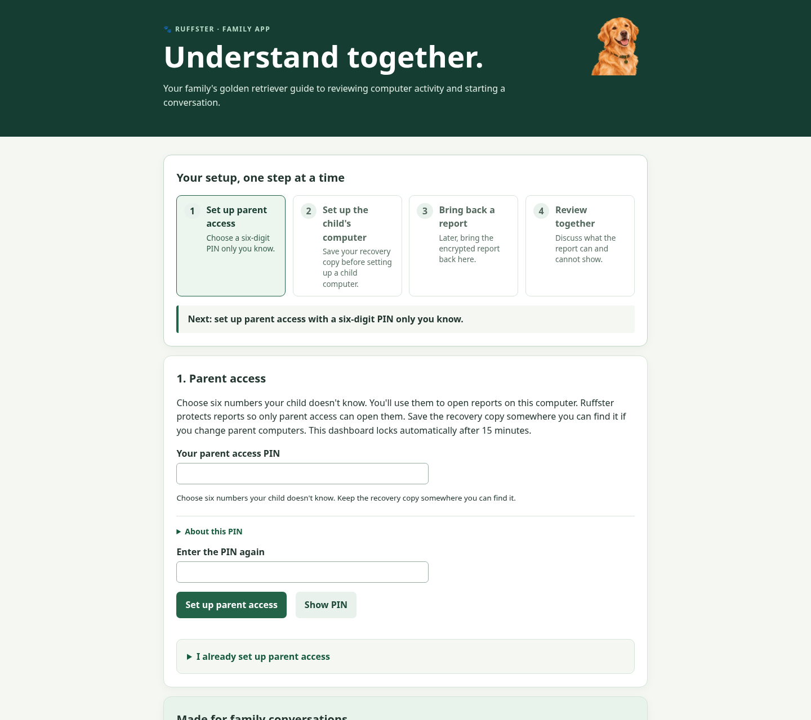
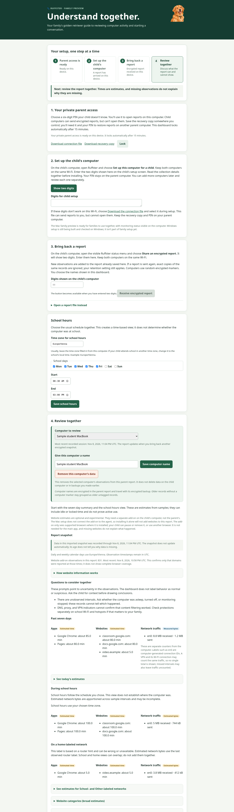

Latest progress
- Agent sampling interval guard: rejects zero, negative, NaN, and infinite intervals with a clear error before creating an activity database, avoiding unsafe sampling-loop timing. Full Linux suite: 224 tests passed, no skips.
- GitHub Pages accessibility scan: axe-core found zero WCAG 2.1 A/AA or best-practice violations on the home, install, and FAQ pages at 1440px desktop and 390px phone widths in Chrome. The audit used temporary tooling and added no runtime or project dependencies. Manual keyboard and screen-reader review remains open.
- Parent dashboard accessibility scan: axe-core found zero WCAG 2.1 A/AA or best-practice violations on the synthetic report at 1440px desktop and 390px phone widths in Chrome. The full suite passed 222 tests with no skips. Manual keyboard, VoiceOver, and family usability review remain open. The report explains that the optional website add-on runs on the child’s computer, can be paused or bypassed, is not included in Mac setup, and cannot explain missing observations.
- Child browser popup: simplified the optional add-on disclosure and removed extension implementation jargon. The mocked connected and paused views fit a 340×600px Chrome popup, have no horizontal overflow, and show zero axe WCAG 2.1 A/AA or best-practice violations. The full Linux suite passed 222 tests with no skips. The full extension and Mac/Windows native-messaging bridge remain experimental and untested as an installation.
- Current Windows companion cross-build: .NET 10.0.403 published the current GUI companion for win-x64 on Linux with warnings treated as errors; PowerShell Core 7.6.6 parsed the Windows package builder successfully. These checks do not execute Windows UI, Task Scheduler, PowerShell cmdlets, event signaling, or the full package builder. No GitHub remote is configured, so native Windows CI has not run.
- GitHub preparation: initialized and committed local
mainat0c4377b, and expanded ignore rules for local configuration, logs, caches, and distribution output. The unsigned preview archive, local Python environment, and generated build output are ignored. No GitHub remote is configured and nothing has been pushed, so hosted CI and Pages deployment have not run. - PowerShell checks on the Linux development host: the route-script parser and mocked route-selection tests now use native Windows PowerShell on Windows or
pwshwhen available elsewhere. Ran both under PowerShell Core 7.6.6; parsing and mocked combined-metric selection passed. Full suite: 221 tests run, 221 passed with no skips. Real Windows route cmdlets, Task Scheduler, and GUI behavior remain unverified. - Existing report retention updated safely: added a one-time schema marker and metadata-only expiry adjustment for databases written by the earlier one-day-later scheme. The migration preserves event ciphertext and does not shift dates again after reopening. Sanitized report snapshots preserve the expiry-version marker through sharing and backup. Focused encrypted-store, report-view, transfer, and migration tests pass; full suite: 221 tests run, 219 passed, 2 Windows-only checks skipped.
- Friendlier setup fallback: the Mac and Windows setup paths now call the fallback a “connection file,” not a public-key file. Parent download labels use “connection file” and “recovery copy”; removal messages describe saved connection details. The child-facing disclosures explain that reports are locked here and opened on the parent computer; the Windows retention explanation wraps to fit the form. Focused copy checks and the full Linux suite pass (220 tests run, 218 passed, 2 Windows-only checks skipped); the Windows GUI companion cross-publishes without warnings. Native interactive dialogs remain unreviewed.
- Retention matches the selected maximum: fixed child-side expiry metadata that kept events for one extra calendar day. The agent now applies the configured limit and can remove a record up to a day earlier because expiry metadata is day-granular; Mac and Windows setup explain this and that cleanup runs while monitoring is active. Focused checks and the full Linux suite pass (218 tests run, 216 passed, 2 Windows-only checks skipped); the Windows GUI companion cross-publishes without warnings. Native installers remain untested for this change.
- Friendlier parent access explanation: replaced “public part” with plain language explaining that the child computer can lock a report for the parent but cannot open it. Moved the recovery-copy guessing caveat under “About this PIN” so setup leads with the child-privacy purpose. Updated the parent dashboard, README, install guide, and FAQ; regenerated and visually reviewed the synthetic setup screenshot. Full Linux suite: 217 tests run, 215 passed, 2 Windows-only checks skipped.
- European privacy and children's rights: added an engineering requirements note covering the collected data, child-facing transparency and agency, retention, local encryption limits, GDPR release questions, and primary EU references. It is explicitly not legal advice or a compliance determination. The focused documentation checks and full Linux suite pass (216 tests run, 214 passed, 2 Windows-only checks skipped).
- Windows Task Scheduler lifecycle: the native package builder now installs a disposable packaged agent with a fictional foreground helper and network/settings collection disabled, waits for encrypted samples, kills the agent, verifies Scheduler restart and a reconstructed gap, then uninstalls and checks the encrypted report was retained. The run uses a temporary profile and preserves it if cleanup fails. Linux checks pass; the native job has not run from this checkout.
- Windows removal cleanup: the native package self-check now deletes a synthetic temp folder through the same deferred PowerShell path, first holding a marker file open to verify retries, then confirming removal after the lock is released. Linux source checks pass; the Windows companion cannot be built or run here because .NET and Windows are unavailable. The test touches no monitoring data.
- Windows router labels: the per-user install now creates a private device key and passes it to the scheduled agent, which records only a pseudonymous default-router hint when Windows can resolve a gateway neighbor. Setup and tray disclosures explain that the raw router address is not saved and the hint does not prove location. Mocked install tests pass on Linux. I aligned route ordering with Microsoft’s documented route-plus-interface metric, added Windows-only PowerShell parser and mocked route-table tests, and reformatted the query into reviewable steps; the Linux suite passed (198 tests, with both native checks skipped). Real Windows route and runtime behavior remain unverified.
- macOS CI lifecycle coverage: the native macOS package job now invokes the existing harmless LaunchAgent validator, which registers a sleep-only job, checks restart after SIGKILL, then removes it and verifies retained setup data. This adds no collector or child activity to CI; the hosted workflow has not run until this checkout is pushed to GitHub.
- Windows IANA time-zone packaging: the Windows builder now collects the `tzdata` package, and its frozen-dashboard smoke check saves a Europe/Vienna schedule and opens an encrypted report. The test passed with a Linux executable fixture; the native Windows package job has not run yet.
- Plain-language network labels: the parent report now explains that values such as en0 are system-generated connection IDs and that VPN/Wi-Fi counters may count the same traffic. It avoids guessing which connection is Wi-Fi.
- School and home network views: the report now estimates interface bytes during the parent-selected school schedule and on a family-labeled network. School values apportion measured intervals by schedule overlap; home values follow the last observed router label and skip an interval that includes a recorded router change. These views are estimates, can overlap, and do not establish the computer’s location.
- Home, School, and Other network estimates: the parent report now separates estimated app time, optional website time, and interface bytes by parent-labeled router hints. These views are independent of schedule-based school hours and do not establish location. Intervals meeting a recorded router change are omitted from network-label estimates. The refreshed fictional report screenshot was captured and visually reviewed; focused checks passed (55 tests), and the full suite passed (195 tests). the test Mac’s Mac is offline, so real router-transition behavior has not been checked there.
- Measured network summaries: parent reports now sum recorded counter changes separately per interface for today and the past seven days, and the weekly view shows the measured values alongside app and website estimates. The UI says counters can overlap, intervals may be missed, and totals cannot be attributed to sites or apps.
- Parent website clarity: the dashboard now explains that website estimates require an optional add-on on the child’s computer, which is not part of setup and can be paused or bypassed. The refreshed report screenshot shows that disclosure. The extension is still experimental and should not be read as complete website coverage.
- Browser add-on explanation: the dashboard states that the add-on runs on the child’s computer, not the parent’s, and works only in supported browsers where installed. It can be paused, removed, or bypassed, and the current Mac setup does not connect it to the agent, so installing it alone adds no website records. It is optional and not needed for the main app. The synthetic report screenshot was refreshed and visually inspected. The latest focused dashboard/docs/Mac disclosure checks passed (29 tests); the full Linux suite passed 195 tests before this copy-only refinement. the test Mac’s Mac remains offline, so native UI changes are unverified there.
- Mac status-menu disclosure: “About this monitoring” now states that website domains are not part of the Mac setup and that the separate experimental browser add-on is not connected to the agent. A source regression test protects this disclosure; the full Linux suite passes 195 tests. the test Mac’s Mac is offline, so the updated Swift helper has not yet been recompiled there.
- Mobile Pages review: a 390 × 844 Chrome capture exposed the status link slipping off-screen in the wrapped navigation. The shared mobile rule now aligns it within the page width, and the home, guide, and FAQ have been captured for visual review.
- Mac install-to-collector path: the real installer launched the encrypted agent using only a synthetic foreground helper. Network collection was disabled for this check. Launchd restarted the agent after a forced crash, the encrypted report recorded a short gap, and uninstall stopped the job while retaining the report by default. The temporary home was then removed.
- Build validation: the current Apple-silicon preview built on the test Mac’s Mac. Its packaged parent dashboard served on loopback and rejected unauthenticated API access. This smoke check is now part of the Mac builder and its CI package job.
- Tests: 195 Linux tests passed. The latest Mac suite ran 167: 165 passed, with two browser-extension JavaScript tests skipped because Node.js is not installed there. The newest launchd-cleanup regression has not been rerun on the Mac because SSH is unavailable.
- Privacy audit: no activity database was found in the checkout, ignored preview archive, or expected Mac app-data directory. The audit did not inspect arbitrary backups or other devices.
- Safer validation cleanup: the live Mac validator now checks for a registered job after installer errors and preserves synthetic test files if launchd cannot be stopped; a regression test and the Mac distribution guide cover this path.
- Simpler parent access: new setups now use a six-digit parent-only PIN; the child computer never receives it. Existing longer-passphrase recovery files still open. The product copy explains the PIN’s child-privacy purpose and keeps its offline-guessing limitation under “About this PIN.” Linux passed 194 tests, including PIN, legacy-vault, and two-digit discovery checks; the synthetic first-run PIN screenshot is current. the test Mac’s Mac returned macOS 26.6 and showed AC system sleep disabled; a detached AC-only caffeinate assertion was started. Later SSH connections timed out during source transfer, so the new code has not been tested on the Mac.
- Simpler device handoff: setup and report sharing now show a two-digit nearby code. Local UDP discovery resolves it to the existing pinned-TLS transfer; the two digits select a sender and are explicitly not authentication. Linux tests exercise the discovery and transfer path, but the broadcast, firewall, macOS local-network prompt, and Windows behavior still need physical-device checks.
- Clearer browser experiment: the child-side extension panel now says it runs in one browser on the child’s computer and that switching browsers, turning it off, or removing it can leave gaps the parent report cannot explain. Full Linux suite: 196 tests passed; the panel was rendered in Chrome headless and fits without clipping. Real extension installation remains unsupported and is outside the standard setup.
- Windows companion package: the latest native x64 cross-build succeeded as a Windows GUI executable. Compressed single-file publishing reduced the companion from 111 MB to 50 MB. The guide now reflects the two-digit handoff; Windows runtime and installer behavior remain unverified on a Windows computer.
- Fewer pairing mistakes: the Mac setup now checks for exactly two digits before connecting; the Windows field limits input to two digits, blocks other typed characters, and validates pasted text before connecting. Both offer the public-key file as a fallback. Source tests and the current Windows x64 cross-build pass; interactive Mac and Windows forms still need device review.
- Windows package runtime check: the Windows builder now launches the frozen core in parent-dashboard mode with an empty temporary profile, verifies the local page and a 403 for unauthenticated API access, then asks the process to stop. A Linux integration test exercised the same validator against the current Python core; the actual frozen Windows core will be checked by the native Windows CI job after the repository is pushed.
- Windows form construction check: the package builder invokes `--self-test-ui` to construct and lay out first-run and removal forms, checking the scrollable disclosure, default 30-day retention, unchecked monitoring confirmation and delete option, and two-digit field without showing a window or registering monitoring. The current x64 Windows GUI executable compiles with this path; native Windows CI will execute it when the repository is pushed. This does not test visible rendering or user interaction.
- Windows monitoring freshness: after each encrypted sample, the agent signals a per-run auto-reset event; the visible tray shows starting, on, or paused as the heartbeat ages and exits on loss of the helper/channel. Event behavior has mock tests, the native x64 tray build compiles, and its package self-check exercises starting/on/paused transitions; the full suite passes 194 tests. The indicator has not yet run on Windows, and native CI cannot interactively verify its appearance.
- Windows heartbeat integration check: the package validator now starts a small mode in the packaged GUI companion and sends a heartbeat from Python through the same Win32 named-event API used by the agent. It runs automatically in the native Windows package job; Linux deliberately skips it. All 194 Linux tests pass, but the interprocess handshake remains unverified until that Windows job runs.
The two synthetic dashboard screenshots below show the first-run parent PIN screen and example report. Parent setup now uses a six-digit parent-only PIN; the documented copy limitation remains that this short PIN does not resist offline guessing if the recovery file is copied.
What works now
Mac agent and records
- Per-user
launchdstart/restart path; a live synthetic-only run verified the encrypted agent starts, restarts after SIGKILL under a new PID/session, records a restart gap, and stops cleanly. A current integration run installs that agent through the real installer with network collection disabled, then verifies encrypted synthetic samples, restart, uninstall, and default report retention. - Foreground application snapshots, interface byte counters, router fingerprint changes, and visible status companion are integrated in experimental mode. The agent now refuses collection without the parent public key; plaintext collection is disabled.
- Heartbeats and session start/stop records make observed gaps visible without claiming why they happened.
- Agent events are encrypted to a parent public key before writing to SQLite. Private key remains parent-side.
- Recent Mac test confirmed real DNS/proxy/VPN configuration is reduced to true/false/unknown fields before encryption; resolver and proxy names are not stored.
Parent experience
- Local loopback parent app creates/unlocks a six-digit-PIN-protected parent access, exports a typed public key, imports encrypted reports, and locks the in-memory parent key after 15 minutes of inactivity.
- One-use, certificate-pinned local transfer can move a report directly between devices. Parents can download an encrypted backup of the imported report. A fresh parent install can restore the encrypted parent recovery copy after PIN validation, without replacing an existing key.
- A live four-step setup guide points parents to key creation/unlock, required key-backup storage, child computer setup and report return, then joint review. The parent dashboard persists the backup acknowledgement and refuses to export or serve the child public key until the parent has downloaded the encrypted vault and confirmed it is safely stored. Its state comes from local key/report status. The review now leads with seven-day estimates and includes per-interface network byte totals beside app and optional website estimates, plus school-hour and home-labeled estimated byte views; school-hours estimates follow; today, category, network, and detailed coverage views are progressively disclosed. The synthetic report screenshot was regenerated from the current UI. Empty activity and gap messages state what the report does not establish. The Mac status companion tracks completed encrypted samples and changes to a paused label when its heartbeat is overdue; the agent exits if the status companion stops. It now sets explicit screen-reader labels and help for starting, active, paused, and report-sharing states; interactive VoiceOver review remains open.
- Daily/weekly sample estimates, snapshot freshness, seven-day recorded agent runtime, session and gap counts, broad domain-based website categories, school schedule views, family-labeled network views, interface totals, and cautious network-protection guidance are displayed. The report offers fact-based questions about missing coverage, unknown routers, and protection indicators without behavior scores. A temporary axe-core scan of the synthetic dashboard found no WCAG 2.1 A/AA or best-practice violations at desktop or phone width; keyboard testing confirmed the retention control focus ring. Full keyboard and VoiceOver review remain open.
- Unknowns and estimates are called out; no location, intent, filtering success, or website traffic volume is inferred.
Parent dashboard previews
The first-run parent PIN setup and report were captured from the local dashboard. The report uses synthetic demonstration records only; neither image contains family or the test Mac activity data.
First step: choose a parent-only PIN

Screenshot: `docs/assets/parent-setup.png` · blank first-run form, no key created · refreshed 8 November 2026.
Report: review observations together

Screenshot: `docs/assets/parent-dashboard.png` · synthetic data · refreshed 8 November 2026 · not a production design sign-off.
Milestone tracker
What remains before this is a family-ready app
Installation and account setup
- Make a signed, notarized Mac installer with clear steps, safe update/removal, and recovery.
- Design parent pairing and child-device setup so families do not handle raw key files or command lines.
- Validate key-backup restore with families, decide on OS-protected parent-key storage, and document what happens if the PIN is lost.
- Visually inspect every onboarding, status, warning, import, and removal screen with accessibility checks.
Accuracy and coverage
- Test start-at-login, crashes, sleep/wake, user switching, lock, network changes, and visible status on supported Macs.
- Implement and test Windows collection and service/tray behavior on actual Windows versions.
- Measure browser domain timing under real use; avoid attributing shared network traffic to sites or apps without sound evidence.
- Show missing coverage and stale reports clearly, and add network/service uptime history.
Privacy and security
- Independent security review of key handling, local web security, encrypted transfer, database retention, backups, and update mechanisms.
- Threat model a device user with administrator access; this prototype does not provide tamper detection or resist a capable device owner.
- Finish retention, deletion, export, and restore behavior across logs, snapshots, and backups; validate the Mac delete dialogs and Windows uninstall experience.
- Review age-appropriate disclosure, data minimization, consent, and European children's privacy obligations with qualified counsel.
Family experience
- Test installation and weekly review with parents who are not technical, plus age-appropriate sessions with children.
- Make summaries conversational: what was observed, how certain it is, and what a parent can ask next.
- Add understandable school/home setup and explain that Wi-Fi identity is only an approximation.
- Plan support, upgrades, uninstall, and data export for a real release.
Data retention and deletion
Child-device and parent-copy retention are separate. Both can be set to 7, 30, 90, 180, or 365 days. The child agent prunes while running and on startup; the parent prunes its encrypted local report when it is opened or retention is shortened. Uninstall keeps child data by default. The Mac setup offers a second-confirmed option to delete that computer's local report, and the parent dashboard can delete its own imported report. Copies and backups remain outside those actions. The developer-only legacy converter writes a separate encrypted copy and leaves the old plaintext source for review; it cannot guarantee secure erasure.
Known limitations
- Application/site duration is estimated between samples and can include idle or locked time. It does not prove active use.
- Network counters are interface totals, may overlap, and cannot currently attribute bytes to apps or websites.
- DNS/proxy/VPN indicators are incomplete. Windows reports VPN as unknown; registry checks do not establish active resolver behavior. No indicator can confirm filtering, detect every VPN/proxy, or establish misconduct.
- Mac coverage is per logged-in user session. A delayed sample now records an explicit gap when wall or monotonic time exceeds the sample tolerance; this identifies missing observations, not their cause, and is not tamper detection. A synthetic-only live Mac LaunchAgent restarted the real agent after SIGKILL and recorded a new session and restart gap; a controlled process suspension recorded a longer gap. Physical sleep/wake and account switching remain untested. The Mac status helper now sets explicit accessibility labels and help; the rendered menu item and VoiceOver behavior still need interactive review.
- Databases from earlier plaintext prototypes are not automatically migrated or erased. A developer-only converter supports the known schema; verify its encrypted copy before separately handling the original.
- The unsigned preview is not a safe supported release. No real-family installation should use it.
Project files and recent checks


Latest Linux development-host run: 222 tests passed, including route-script and preview-builder parsing plus mocked route selection under PowerShell Core 7.6.6. The parent report now displays the count and latest timestamp of website-domain samples received; no samples are described as inconclusive, and the dashboard does not claim extension installation or full browser coverage. Source-control ignore rules now cover local databases, keys, recovery vaults, and signing material. Parent PIN entry validates six digits during new setup while still allowing older phrases for existing vaults. Setup and report handoff now use one plain-language pattern: the sending computer shows two digits, and the receiving computer enters them. The dashboard only enables report receipt after two digits are entered. Its synthetic screenshots were refreshed and visually inspected. The GitHub Pages source was also rendered in Chrome and reviewed at desktop and 390px mobile widths; home, install, and FAQ layouts remain readable. The Pages site is not published because this checkout has no Git remote. These latest UI changes have not been tested on the test Mac’s Mac because SSH timed out, and no Windows host is available. Latest full Mac suite: 167 tests run, 165 passed and two Node.js-dependent extension checks skipped. That unit-suite run used a temporary checkout and virtual environment on macOS 26.6 arm64 and did not install an agent; a separate live integration run temporarily installed and removed a synthetic LaunchAgent through the real installer. Windows registry tests use simulated values; no Windows runtime was available. The parent dashboard now uses platform-neutral child-device setup language and generic OS-settings explanations. Its setup and report screenshots use synthetic data only; refresh them alongside dashboard changes before public launch. Retention and explicit local report deletion are covered on both test hosts. Windows install/remove tests use simulated Task Scheduler responses; no Windows machine was available. The current unsigned Apple-silicon bundle with heartbeat-backed status was rebuilt on the test Mac’s Mac; its frozen parent runtime served the dashboard on loopback and rejected unauthenticated API access. The temporary build and data were removed; the smoke check now runs in the Mac build and CI; a read-only audit found no activity database in the checkout, old ignored preview ZIP, or expected Mac app data directory; it is not a public release download. The Windows setup/tray companion, including the parent dashboard launcher, cross-publishes from Linux for win-x64 with .NET 10.0.403. Setup asks Task Scheduler to launch the agent immediately as well as at future sign-ins; uncertain starts preserve metadata and direct parents to settings instead of allowing a duplicate install. That build exposed and fixed a helper-scope compile error and a nullable-process-path warning. The 50 MB PE32+ output is compile evidence only; the Windows UI self-check, Task Scheduler flow, and package builder still require Windows. The project now treats C# compiler warnings as errors, and that build also passes. the test Mac’s Mac briefly answered SSH but went offline during temporary source staging; no agent or service was started in that attempt. Mac and Linux tests passed over loopback, and a separate synthetic-key transfer succeeded over the home LAN from the test Mac’s Mac to the Linux host with a matching SHA-256 fingerprint. Report questions now surface coverage, network-label, and protection uncertainty without classifying behavior. The report screenshot uses synthetic records and shows the questions section. The parent setup screenshot now shows the blank six-digit PIN form before child pairing; the report screenshot remains synthetic. The reverse TCP direction returned “No route to host”; no firewall settings were changed. A temporary Mac agent suspended for 7.2 seconds recorded and encrypted a 7.71-second gap, and the parent projection reconstructed it. This validates process suspension, not actual system sleep. The packaged Mac parent app now passes a fresh-profile key-backup restore and private-directory permission check using synthetic key material; no agent or service was started. The Mac setup compiled on the test Mac’s Mac after the parent-key code connection was changed to show cancellable progress and read network results off the UI thread; the dialog has not been exercised interactively. Other native dialogs were not visually exercised. The temporary synthetic LaunchAgent was uninstalled successfully; the latest SSH attempt to the Mac timed out, so its present state has not been rechecked. The bundle is still an experimental developer preview. The packaged legacy plaintext converter was smoke-tested on the test Mac’s Mac with generated data; the original remained byte-for-byte unchanged and the encrypted copy decrypted with the parent key. The current unsigned preview ZIP passed archive integrity checks (SHA-256 `ab64a5d76166c8b7161d14cbf8cbcc1b99f04c198a1a506d284f9fe9f70a7c66`). The Mac installer now wires a private device key for pseudonymous router-change events; a live adapter call returned only a pseudonymous value without writing an activity database. Install and removal failures now surface readable CLI reasons in the native Mac setup; the packaged missing-key error path was verified without installing a service. See the validation log for test scope and caveats.